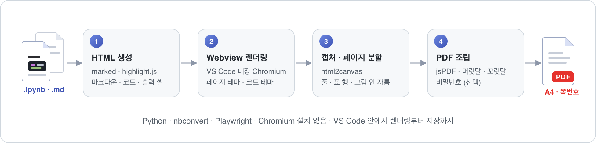
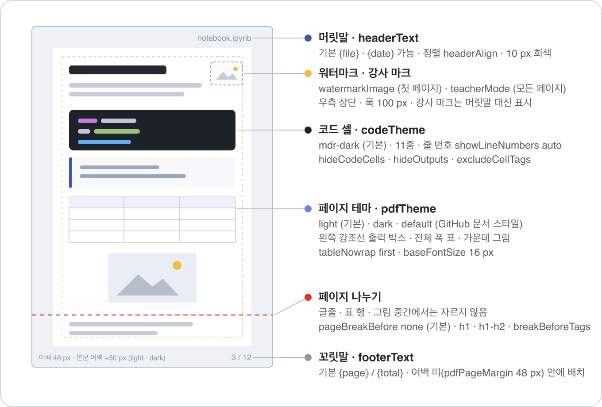
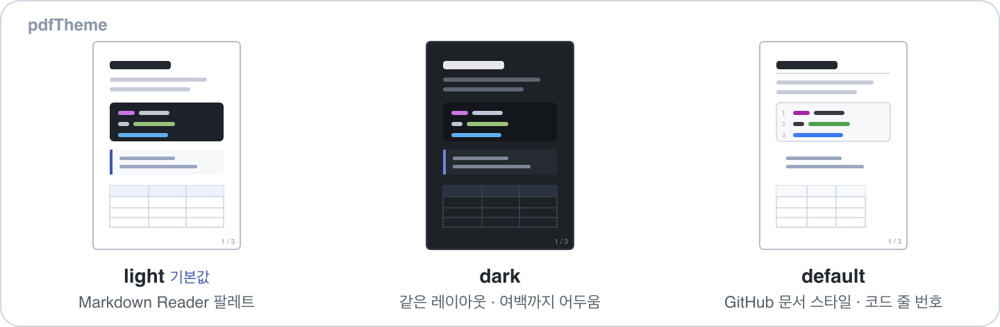
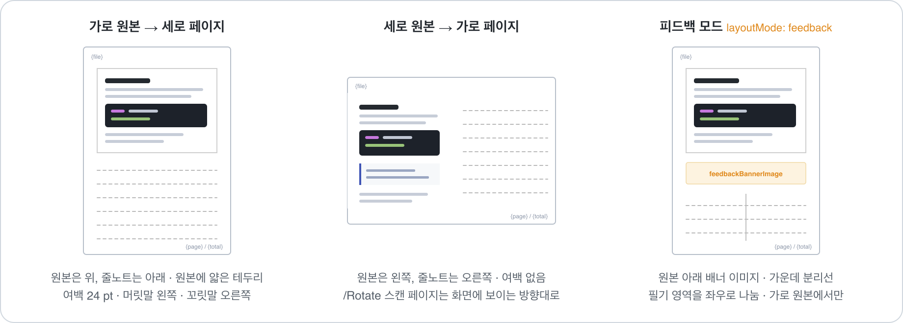
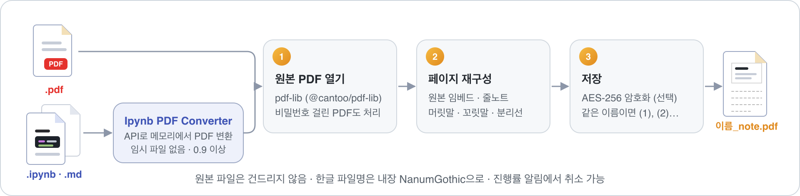

Ipynb PDF Converter
.ipynb · .md → PDF
노트북과 마크다운을 A4 같은 종이 규격 PDF로. 글줄·표·그림을 자르지 않고 페이지를 나누며, Python이나 Chromium을 따로 설치할 필요가 없습니다.
Jupyter 노트북과 마크다운을 종이 규격 PDF로 바꾸고, 그 PDF 페이지마다 줄노트 필기 영역을 붙입니다. 모두 VS Code 안에서 우클릭 한 번으로.
노트북과 마크다운을 A4 같은 종이 규격 PDF로. 글줄·표·그림을 자르지 않고 페이지를 나누며, Python이나 Chromium을 따로 설치할 필요가 없습니다.
PDF 페이지마다 줄노트 필기 영역과 머릿글을 붙입니다. 가로 원본은 아래에, 세로 원본은 오른쪽에 필기 공간을 만들어 수업 자료를 바로 노트로 씁니다.
우클릭부터 저장까지 VS Code 안에서 끝납니다. nb_convert.py와 같은 결과를 냅니다.

탐색기 · 에디터 탭 · 편집기 본문 · 노트북 셀 · 명령 팔레트 어디서든.
글줄 · 표 행 · 그림 중간에서는 절대 자르지 않습니다.
A3 · A4 · A5 · B4 · B5 · Letter · Legal · 16:9 와이드, iPad · Galaxy Tab 7종.
페이지 테마 3종(light · dark · default), 코드 하이라이트 11종.
상대·절대 경로, URL, 셀 첨부 이미지까지 PDF에 포함. 못 찾으면 경고.
열람 비밀번호와 권한, 한 페이지 표지, 강사 마크(teacher mode).


pdfTheme.ipynb · .md 파일을 우클릭이름 (1).pdf로 저장외부 의존성 없음. Python · nbconvert · Playwright · Chromium 설치가 필요 없습니다. VS Code 내장 Webview로 렌더링합니다.
PDF 페이지마다 줄노트 필기 영역과 머릿글을 붙여 새 PDF를 만듭니다. 원본은 건드리지 않습니다.

줄 간격 · 머릿글 크기 · 여백이 페이지 크기에 비례해 조절됩니다.
원본 아래 배너 이미지와, 필기 영역을 좌우로 나누는 분리선.
원본 크기 유지(기본) 또는 A0-A6 · B0-B6 · Letter · Tabloid · 태블릿 7종.
.ipynb · .md는 Ipynb PDF Converter가 메모리에서 먼저 PDF로 바꿉니다.
NanumGothic 내장으로 머릿말 · 꼬릿말에 한글이 그대로.
비밀번호와 열람 권한. 잠긴 원본 PDF도 한 번 물어보고 엽니다.

.pdf · .ipynb · .md 파일을 우클릭원본이름_note.pdf 생성요구 사항. VS Code 1.84 이상. .ipynb · .md 입력에는 Ipynb PDF Converter 0.9 이상이 필요하며 함께 설치됩니다. PDF 입력은 단독으로 동작합니다.
수업 노트북을 학생용 필기 노트로 만드는 가장 짧은 길.
정답 셀에 answer 태그를 달고 excludeCellTags로 빼면 학생 배포본이 됩니다.
노트북을 우클릭해 필기 영역 추가를 고르면 PDF 변환과 줄노트가 한 번에.
용지를 iPad · Galaxy Tab 규격으로 고르면 화면에 꽉 차게 보입니다.